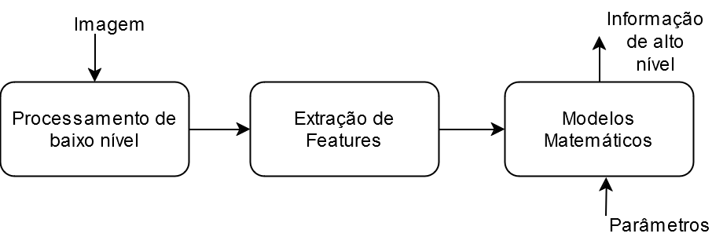
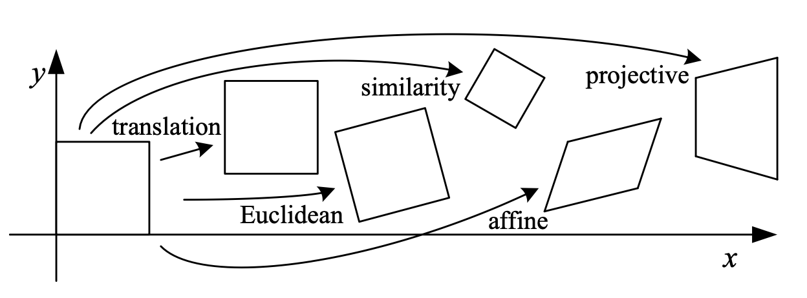
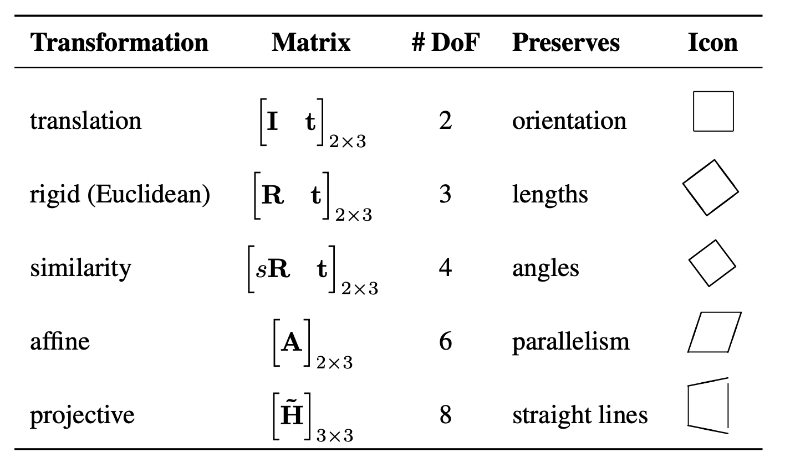
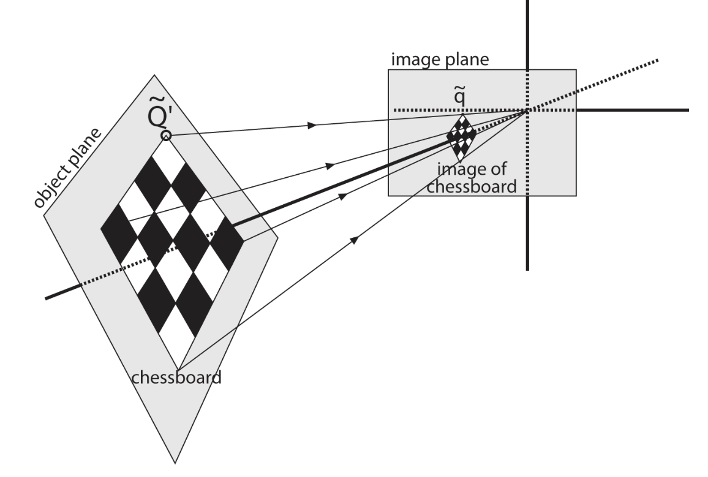
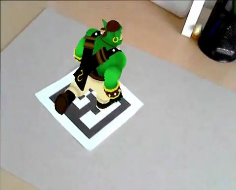
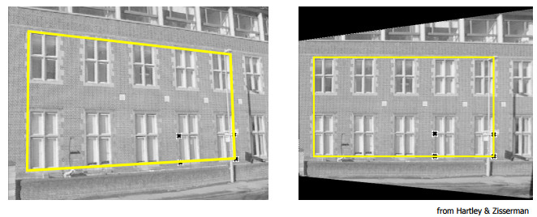
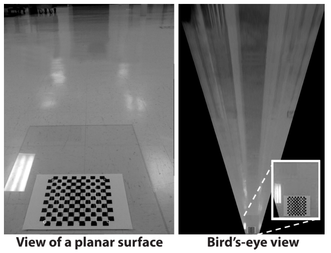
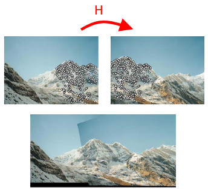
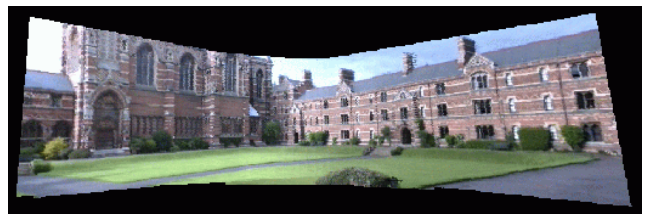
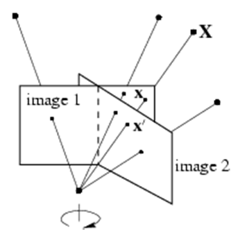

ECT/UFRN
Várias aplicações de Visão Computacional envolvem obter informações de alto nível:

É preciso portanto conhecer, entender e aplicar modelos matemáticos que relacionem features extraídas de imagens com a cena de interesse.
Um destes modelos é chamado de homografia

Hierarquia de transformações:

Hierarquia de transformações:
Calibração de câmera:

Realidade aumentada:

Correção de perspectiva:

Correção de perspectiva:

Mosaico (1):

Mosaico (2):


Uma recurso muito utilizado para se trabalhar no espaço 3D é representar pontos com coordenadas homogêneas.
O ponto 2D \mathbf{p} = [x, y]^t é representado em coordenadas homogêneas por
\mathbf{\hat{p}} = \begin{bmatrix} kx \\ ky \\ k, \end{bmatrix}
onde k \in \mathbb{R},\quad k \neq 0 é a escala homogênea.
Com elas, é possível representar uma transformação em um ponto utilizando multiplicações matriciais:
\begin{aligned} \mathbf{\hat{p}'} &= T\mathbf{\hat{p}}\\ \begin{bmatrix} k'x' \\ k'y' \\ k' \end{bmatrix} &= \begin{bmatrix} t_1 & t_2 & t_3 \\ t_4 & t_5 & t_6 \\ t_7 & t_8 & t_9 \end{bmatrix} \begin{bmatrix} kx \\ ky \\ k \end{bmatrix}, \end{aligned}
onde o ponto \mathbf{\hat{p}'} é o resultado da transformação H em \mathbf{\hat{p}}
Em alternativa a usar as coordenadas não homogêneas x,y junto com a escala k, também é possível representar um ponto em termos de suas coordenadas homogêneas \hat{x}, \hat{y}, \hat{w}:
\mathbf{\hat{p}} = \begin{bmatrix} \hat{x} \\ \hat{y} \\ \hat{w} \end{bmatrix} = \begin{bmatrix} kx \\ ky \\ k \end{bmatrix}
Dados um ponto \mathbf{\hat{p}}_1 = [\hat{x}_1, \hat{y}_1, \hat{w}_1]^t presente em uma imagem I_1 e a sua correspondência \mathbf{\hat{p}}_2 = [\hat{x}_2, \hat{y}_2, \hat{w}_2]^t presente em uma imagem I_2, uma homografia H relaciona o par de pontos por
\mathbf{\hat{p}}_2 = H\mathbf{\hat{p}}_1
A homografia possui inversa, ou seja, H relaciona uma correspondência entre pontos por
\mathbf{\hat{p}}_2 = H\mathbf{\hat{p}}_1
e
\mathbf{\hat{p}}_1 = H^{-1}\mathbf{\hat{p}}_2
A homografia H é uma transformação homogênea, isto é, definida a menos de um fator de escala:
\begin{bmatrix} h_1 & h_2 & h_3 \\ h_4 & h_5 & h_6 \\ h_7 & h_8 & h_9 \end{bmatrix} \overset{\text{def}}{=} \begin{bmatrix} wh_1 & wh_2 & wh_3 \\ wh_4 & wh_5 & wh_6 \\ wh_7 & wh_8 & wh_9 \end{bmatrix}
O cálculo da homografia a partir de correspondências pode ser obtido desenvolvendo a equação \mathbf{\hat{p}}_2 = H\mathbf{\hat{p}}_1:
\begin{bmatrix} \hat{x}_2 \\ \hat{y}_2 \\ \hat{w}_2 \end{bmatrix} = \begin{matrix} h_1\hat{x}_1 + h_2\hat{y}_1 + h_3\hat{w}_1 \\ h_4\hat{x}_1 + h_5\hat{y}_1 + h_6\hat{w}_1 \\ h_7\hat{x}_1 + h_8\hat{y}_1 + h_9\hat{w}_1 \end{matrix}
Observe que para converter o ponto resultante para coordenadas não homogêneas [x_2, y_2], devemos dividir \hat{x}_2 e \hat{y}_2 por \hat{w}_2, ou seja
\begin{bmatrix} x_2 \\ y_2 \\ 1 \end{bmatrix} = \begin{bmatrix} \hat{x}_2/\hat{w}_2 \\ \hat{y}_2/\hat{w}_2 \\ 1 \end{bmatrix}
Fazendo isto ao mesmo tempo em que consideramos \hat{w}_1 = 1, obtemos:
\begin{bmatrix} x_2 \\ y_2 \end{bmatrix} = \begin{matrix} \dfrac{h_1\hat{x}_1 + h_2\hat{y}_1 + h_3}{h_7\hat{x}_1 + h_8\hat{y}_1 + h_9} \\[1em] \dfrac{h_4\hat{x}_1 + h_5\hat{y}_1 + h_6}{h_7\hat{x}_1 + h_8\hat{y}_1 + h_9} \end{matrix}
Multiplicando o lado esquerdo pelo denominador, ficamos com
\begin{matrix} h_7\hat{x}_1x_2 + h_8\hat{y}_1x_2 + h_9x_2 \\ h_7\hat{x}_1y_2 + h_8\hat{y}_1y_2 + h_9y_2 \end{matrix} = \begin{matrix} h_1\hat{x}_1 + h_2\hat{y}_1 + h_3 \\ h_4\hat{x}_1 + h_5\hat{y}_1 + h_6 \end{matrix}
Após isto, passamos o lado direito para o lado esquerdo, ficando com duas equações homogêneas:
\begin{matrix} -h_1\hat{x}_1 - h_2\hat{y}_1 - h_3 + h_7\hat{x}_1x_2 + h_8\hat{y}_1x_2 + h_9x_2 \\ -h_4\hat{x}_1 - h_5\hat{y}_1 - h_6 + h_7\hat{x}_1y_2 + h_8\hat{y}_1y_2 + h_9y_2 \end{matrix} = \begin{matrix} 0 \\ 0 \end{matrix}
Observe que a partir destas equações, é possível construir um sistema de equações lineares homogêneo (2 \times 9), com as incógnitas sendo as entradas da matriz H:
\begin{bmatrix} -\hat{x}_1 & -\hat{y}_1 & -1 & 0 & 0 & 0 & \hat{x}_1\hat{x}_2 & \hat{y}_1\hat{x}_2 & \hat{x}_2 \\ 0 & 0 & 0 & -\hat{x}_1 & -\hat{y}_1 & -1 & \hat{x}_1\hat{y}_2 & \hat{y}_1\hat{y}_2 & \hat{y}_2 \end{bmatrix} \begin{bmatrix} h_1 \\ h_2 \\ \vdots \\ h_9 \end{bmatrix} = \begin{bmatrix} 0 \\ 0 \end{bmatrix}
Problema: 2 equações, 8 incógnitas. Como proceder?
Como cada correspondência contribui com 2 equações e existem 8 incógnitas*, as entradas de H podem ser estimadas com n \geq 4 correspondências.
*Apesar da matriz H possuir 9 componentes, ela é definida a menos de um fator de escala
Isso dá origem ao sistema 2n \times 9 abaixo, em que o sobrescrito (i) indica a i-ésima correspondência, i = 1, \ldots, n:
\footnotesize \begin{bmatrix} -\hat{x}_1^{(1)} & -\hat{y}_1^{(1)} & -1 & 0 & 0 & 0 & \hat{x}_1^{(1)}\hat{x}_2^{(1)} & \hat{y}_1^{(1)}\hat{x}_2^{(1)} & \hat{x}_2^{(1)} \\ 0 & 0 & 0 & -\hat{x}_1^{(1)} & -\hat{y}_1^{(1)} & -1 & \hat{x}_1^{(1)}\hat{y}_2^{(1)} & \hat{y}_1^{(1)}\hat{y}_2^{(1)} & \hat{y}_2^{(1)} \\ -\hat{x}_1^{(2)} & -\hat{y}_1^{(2)} & -1 & 0 & 0 & 0 & \hat{x}_1^{(2)}\hat{x}_2^{(2)} & \hat{y}_1^{(2)}\hat{x}_2^{(2)} & \hat{x}_2^{(2)} \\ 0 & 0 & 0 & -\hat{x}_1^{(2)} & -\hat{y}_1^{(2)} & -1 & \hat{x}_1^{(2)}\hat{y}_2^{(2)} & \hat{y}_1^{(2)}\hat{y}_2^{(2)} & \hat{y}_2^{(2)} \\ \vdots & \vdots & \vdots & \vdots & \vdots & \vdots & \vdots & \vdots & \vdots \\ -\hat{x}_1^{(n)} & -\hat{y}_1^{(n)} & -1 & 0 & 0 & 0 & \hat{x}_1^{(n)}\hat{x}_2^{(n)} & \hat{y}_1^{(n)}\hat{x}_2^{(n)} & \hat{x}_2^{(n)} \\ 0 & 0 & 0 & -\hat{x}_1^{(n)} & -\hat{y}_1^{(n)} & -1 & \hat{x}_1^{(n)}\hat{y}_2^{(n)} & \hat{y}_1^{(n)}\hat{y}_2^{(n)} & \hat{y}_2^{(n)} \end{bmatrix} \begin{bmatrix} h_1 \\ h_2 \\ \vdots \\ h_9 \end{bmatrix} = \begin{bmatrix} 0 \\ 0 \\ 0 \\ 0 \\ \vdots \\ 0 \\ 0 \end{bmatrix}
O sistema linear homogêneo A\mathbf{h} = \mathbf{0}, com \mathbf{h} sendo as entradas da matriz H, deve ser resolvido com a restrição do vetor \mathbf{h} ter norma unitária, isto é, \|\mathbf{h}\| = 1.
Para resolvê-lo, utilizamos um método numérico conhecido como SVD (Decomposição em Valores Singulares): a matriz A é decomposta em duas matrizes ortonormais U e V, e em uma matriz diagonal \Sigma composta pelos valores singulares de A (raízes quadradas dos autovalores de A^tA):
A = U\Sigma V^t = \sum_{i=1}^{9} \sigma_i \mathbf{u}_i \mathbf{v}_i^t
Como os valores singulares são computados em ordem decrescente, o vetor singular à direita de A que corresponde ao menor valor singular contém a solução.
Em outras palavras, as entradas da matriz H estão, em ordem, no último vetor coluna da matriz V.
Funcionalidades da OpenCV relacionadas ao tópico da aula:
cv.convertPointsToHomogeneous: converte para coordenadas homogêneascv.convertPointsFromHomogeneous: converte para coordenadas não homogêneascv.findHomography: calcula homografia a partir de pelo menos 4 correspondênciascv.SVDecomp ou np.linalg.svd: decompõe uma matriz em seus valores singularesNesta aula – homografia:
Visão Robótica - PPGEMECA/UFRN